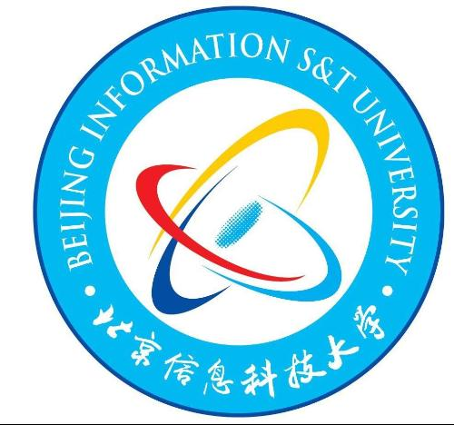

Xiaodong Wang (王晓东)

|
|
About me
I am currently a second-year Master student in Software Engineering from School of Software and Microelectronics at Peking University, supervised by Associate Prof. Yuejian Fang. Before this, I recieved my Bachelor's degree in Data Science & Big Data Technology from Beijing Information Science and Technology University (BISTU) in 2021.
I once worker as a research intern in Institute of Computing Technology at the Chinese Academy of Sciences, and an algorithm intern in MegVII Research. Now, I am working as an research intern in Microsoft Research Asia .
Currently, my research interests include
Multimodal Learning, especially Text + Vision.
Visual Synthesis, including image, video, 3D vision.
Large Language Model + Vision. Let LLM have more powerful capabilities.
News
[2023-06-01] I am looking for an opportunity be a Ph.D. candidate starting 2024, focusing on Multimodal training and LLM + Vision. If you have any related opportunities, I would very appreciate it if you reach out to me via email.
Eduacation Experiences

|
Peking UniversityBeijing, ChinaSep 2021 - Jul 2024 (expected) M.S. in Software Engineering GPA: 3.66/4.00 |
|  |
Beijing Information Science and Technology UniversityBeijing, ChinaSep 2017 - Jul 2021 B.S. in Data Science GPA: 4.43/5.00, ranking: 1/32 |
Recent Publications
Learning 3D Photography Videos via Self-supervised Diffusion on Single Images (NUWA-3D)
Xiaodong Wang, Chenfei Wu, Shengming Yin, Minheng Ni, Jianfeng Wang, Linjie Li, Zhengyuan Yang, Fan Yang, Lijuan Wang, Zicheng Liu, Yuejian Fang, Nan Duan
The 32nd International Joint Conference on Artificial Intelligence (IJCAI'23), CCF A
[pdf] [suppl]NUWA-XL: Diffusion over Diffusion for eXtremely Long Video Generation
Shengming Yin, Chenfei Wu, Huan Yang, Jianfeng Wang, Xiaodong Wang, Minheng Ni, Zhengyuan Yang, Linjie Li, Shuguang Liu, Fan Yang, Jianlong Fu, Gong Ming, Lijuan Wang, Zicheng Liu, Houqiang Li, Nan Duan
The 61st Annual Meeting of the Association for Computational Linguistics (ACL'23), ORAL, CCF A
[pdf] [homepage]Visual ChatGPT: Talking, Drawing and Editing with Visual Foundation Models
Chenfei Wu, Shengming Yin, Weizhen Qi, Xiaodong Wang, Zecheng Tang, Nan Duan
Preprint, 2023.03
[pdf] [Github 34K Star]Revisiting Unsupervised Domain Adaptation Models: a Smoothness Perspective
Xiaodong Wang, Junbao Zhuo, Mengru Zhang, Shuhui Wang, Yuejian Fang
The 16th Asian Conference on Computer Vision (ACCV'22), CCF C
[pdf] [code]Learning Invariant Representation with Consistency and Diversity for Semi-supervised Source Hypothesis Transfer
Xiaodong Wang, Junbao Zhuo, Shuhao Cui, Shuhui Wang
Preprint, 2021.07
[pdf] [code]
Professional Experiences

|
Microsoft Research Asia.Beijing, China Research Intern, supervised by Chenfei Wu & Nan Duan, Natural Language Group. May 2022 - Present |

|
MEGVII.Beijing, China Algorithm Intern at MegVII Research, Face Detection Team. June 2021 - Sep 2021 |
|
Institute of Computing Technology, Chinese Academy of SciencesBeijing, China Research Intern at the VIPL team, supervised by Prof. Shuhui Wang. Dec 2020 - May 2021 |
Selected Awards
- Merit Student, Peking University2022
- ACCV 2022 Student Travel Grants2022
- Beijing Outstanding Graduates2021
- President Scholarship (Highest Student Honor in BISTU) 2020
- Outstanding Student, BISTU 2018 & 2019 & 2020
- National Encouragement Scholarship 2019
- Third prize of the 11th National Undergraduate Mathematics Contest (non-mathematics) 2019
- Second prize of the 2019 Asia and Pacific Mathmatical Contest in Modeling 2019
- Second Prize in International Underwater Robot Competition 2019
- National Scholarship 2018
Services
Reviewer: ACCV 2022.
Membership: Student member of CCF, Student member of Chinese Society of Image and Graphics.